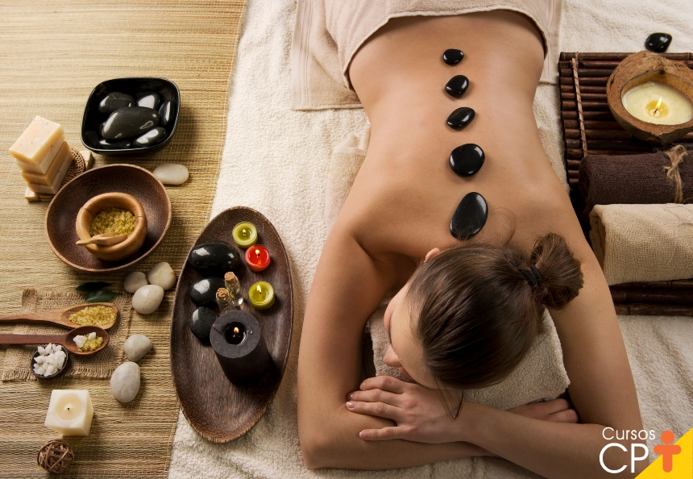

🌿
Relaxamento
Promove momentos de relaxamento e ajuda a reduzir a sensação de tensão do dia a dia.
A massoterapia reúne técnicas de massagem utilizadas para promover relaxamento, aliviar tensões musculares e proporcionar bem-estar físico e mental.
Agende sua avaliação →
A massoterapia utiliza diferentes técnicas manuais aplicadas sobre os tecidos do corpo, de acordo com as necessidades e os objetivos de cada paciente.
Durante a sessão, o profissional pode utilizar movimentos como deslizamentos, amassamentos e pressões controladas para trabalhar regiões de tensão muscular.
A técnica e a intensidade são escolhidas conforme a avaliação individual, respeitando os limites e as condições de cada pessoa.
As técnicas de massagem podem contribuir para o conforto físico e o relaxamento.
Promove momentos de relaxamento e ajuda a reduzir a sensação de tensão do dia a dia.
Pode ajudar a aliviar tensões musculares e proporcionar maior conforto corporal.
Contribui para uma sensação de cuidado, tranquilidade e bem-estar.
Auxilia no cuidado com a musculatura e na percepção de conforto físico.
A massoterapia pode ser recomendada para pessoas que buscam relaxamento e alívio de tensões, após avaliação profissional.
A indicação depende de uma avaliação profissional. Algumas condições de saúde exigem cuidados ou contraindicam determinadas técnicas de massagem.
Seu bem-estar também merece atenção. Conheça os benefícios da massoterapia.
Agendar atendimento →